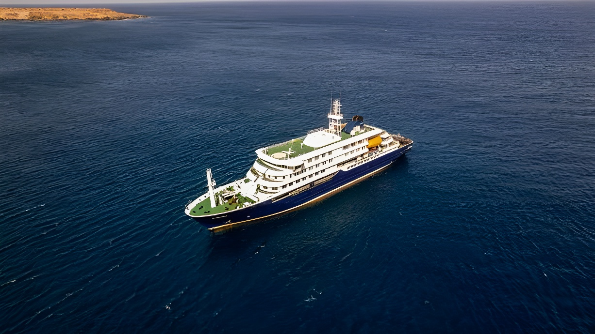

En avril 2026, un foyer de hantavirus est détecté à bord du navire de croisière polaire MV Hondius, alors qu'il traverse l'Atlantique Sud. Trois morts, au moins huit cas confirmés et un virus de la souche Andes — capable de transmission interhumaine — font de cette crise l'épisode épidémique maritime le plus grave de la décennie. La gestion de l'évacuation, entre refus des îles Canaries et mobilisation de l'OMS, révèle la complexité des crises sanitaires en dehors des frontières nationales.
Le MV Hondius est un navire de croisière polaire appartenant à la compagnie néerlandaise Oceanwide Expeditions. Baptisé en hommage au cartographe Jodocus Hondius, il est conçu pour naviguer dans les eaux difficiles de l'Antarctique et de l'Atlantique Sud. Le 1er avril 2026, il quitte le sud de l'Argentine avec à son bord quelque 150 personnes — passagers et membres d'équipage — provenant de 23 nationalités différentes, pour un voyage prévu vers l'Antarctique et plusieurs îles isolées de l'Atlantique Sud.
Les autorités argentines confirment qu'aucun passager ne présentait de symptômes de hantavirus au moment de l'appareillage. L'hypothèse privilégiée par l'OMS est qu'un ou plusieurs passagers ont contracté le virus avant l'embarquement, vraisemblablement en Argentine, lors d'activités en contact avec la faune sauvage locale — le pays étant une zone endémique connue pour la souche Andes.
Les hantavirus forment une famille de virus à ARN transmis principalement par des rongeurs sauvages. Chez l'animal, l'infection est asymptomatique et persistante : les rongeurs contaminés disséminent le virus via leurs fèces, urines et salive. Chez l'humain, l'inhalation d'aérosols contenant des particules virales provoque deux syndromes principaux : le syndrome pulmonaire à hantavirus (SPH) et la fièvre hémorragique avec syndrome rénal (FHSR).
La souche Andes, identifiée en Amérique du Sud, est cependant une exception dans cette famille : c'est à ce jour l'un des rares hantavirus pour lequel des cas de transmission d'humain à humain ont été documentés, lors de contacts prolongés et très étroits. L'OMS précise que cette transmission interhumaine reste rare et limitée aux contacts intimes — cohabitation en chambre partagée, lien conjugal. Le 6 mai, des analyses de laboratoire confirment officiellement que la souche en cause à bord du Hondius est bien le virus Andes.
Le MV Hondius appareille du sud de l'Argentine pour une expédition polaire vers l'Antarctique et plusieurs îles isolées de l'Atlantique Sud.
Un ressortissant néerlandais décède à bord. Son corps sera transféré du navire deux semaines plus tard, lors d'une escale à Sainte-Hélène (territoire britannique d'outre-mer).
L'épouse du défunt débarque également à Sainte-Hélène et prend un vol vers l'Afrique du Sud. Elle décède dans un hôpital sud-africain le 26 avril. Le navire fait une nouvelle escale à l'île de l'Ascension, où un passager britannique malade est évacué vers l'Afrique du Sud pour y recevoir des soins.
Une ressortissante allemande décède à bord du navire — troisième mort liée à l'épidémie.
L'OMS publie une alerte épidémique officielle. Le MV Hondius est ancré au large de Praia, capitale du Cap-Vert. Les passagers sont confinés dans leurs cabines. Le gouvernement cap-verdien met en place une zone d'isolement et une équipe pluridisciplinaire de réponse sanitaire.
L'OMS recense sept cas confirmés dont trois décès. Trois personnes infectées — deux membres d'équipage et un cas contact — sont évacuées du navire par ambulance aérienne depuis l'aéroport de Praia vers les Pays-Bas et l'Allemagne.
Confirmation officielle : la souche est le virus Andes. Le nombre de cas grimpe à huit selon l'OMS. Le Hondius se prépare à rejoindre Tenerife (îles Canaries, Espagne) pour le débarquement des passagers asymptomatiques.
L'un des épisodes les plus révélateurs de cette crise n'est pas médical mais politique. Alors que le gouvernement espagnol a indiqué que le MV Hondius serait autorisé à accoster dans l'archipel des Canaries, les autorités régionales ont refusé catégoriquement d'accueillir le navire dans leurs ports. Le président du gouvernement canarien, Fernando Clavijo, a justifié ce refus par l'insuffisance des informations disponibles sur l'épidémie et l'impossibilité, selon lui, de garantir la sécurité de la population locale.
Cette tension entre l'État central espagnol et la communauté autonome illustre les difficultés pratiques de la gestion des crises sanitaires maritimes : compétences partagées, pressions politiques locales, et urgence humanitaire constituent une équation difficile à résoudre. In fine, le ministre espagnol de la Santé a annoncé que le Hondius serait finalement autorisé à accoster à Tenerife, où les passagers asymptomatiques feraient l'objet d'une évaluation médicale avant leur rapatriement dans leurs pays respectifs.
L'OMS a émis une alerte épidémique dès le 4 mai 2026, qualifiant l'événement de « cluster de hantavirus lié à des voyages en croisière, multinationale ». Le directeur général de l'organisation, Tedros Adhanom Ghebreyesus, a néanmoins tenu à relativiser l'ampleur du risque collectif : le niveau de risque pour le grand public reste « faible », a-t-il affirmé. Maria Van Kerkhove, directrice de la préparation aux épidémies, a précisé que la transmission interhumaine ne se produit que dans des contextes de contact prolongé et très étroit — partage de cabine, lien conjugal — et ne constitue pas une menace de diffusion large.
« Nous pensons qu'il y a peut-être une transmission interhumaine chez des contacts très proches — un mari et sa femme, des personnes partageant la même cabine. »
— Maria Van Kerkhove, OMS, directrice de la préparation aux épidémies et pandémies, mai 2026L'Afrique du Sud, où plusieurs passagers ont été évacués, a lancé un traçage des contacts à titre préventif. Un ressortissant britannique y est traité pour la souche Andes confirmée, selon l'Institut national sud-africain des maladies transmissibles.
| Acteur | Rôle dans la crise | Position |
|---|---|---|
| OMS | Coordination internationale, alerte officielle | Risque collectif « faible » |
| Cap-Vert | Port d'ancrage, évacuations aériennes | Coopération active |
| Îles Canaries | Région d'accostage visée | Refus initial, puis accord |
| Espagne (État) | Autorité nationale de santé | Autorisation accordée |
| Afrique du Sud | Accueil de passagers évacués | Traçage préventif lancé |
| Pays-Bas / Allemagne | Rapatriement des cas confirmés | Transferts sanitaires organisés |
L'épidémie à bord du MV Hondius pose des questions qui dépassent la virologie. Dans un monde où les navires de croisière traversent des dizaines d'espaces juridiques différents en quelques semaines, la question de la gouvernance sanitaire maritime devient centrale. Qui décide de l'accostage ? Qui assume les coûts d'une évacuation ? Comment protéger les passagers de 23 nationalités différentes sans pénaliser les populations côtières ?
La crise a également mis en lumière les lacunes dans la surveillance épidémique à bord des navires de croisière polaires : le premier décès remontait au 11 avril, mais l'alerte officielle de l'OMS n'a été émise que le 4 mai, soit plus de trois semaines après. Ce délai, entre les premières morts et la réponse internationale coordonnée, illustre la difficulté d'identifier précocement des pathologies rares dans des environnements éloignés.
L'épisode du MV Hondius constitue une première dans l'histoire récente de la santé publique mondiale : jamais un hantavirus n'avait provoqué une épidémie documentée sur un navire de croisière en haute mer. Si le risque de pandémie est exclu par l'OMS, l'affaire révèle des angles morts réels dans la gestion des maladies rares en milieu maritime international. Elle rappelle aussi que les voyages dans des zones sauvages et isolées — Antarctique, îles subantarctiques — exposent à des pathogènes méconnus, et que la chaîne de signalement sanitaire doit être renforcée bien avant que les navires ne regagnent des ports d'envergure.